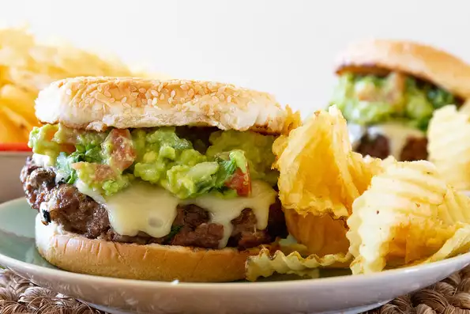

Cheeseburger

Description
A slight twist on the classic cheeseburger, this fusion recipe will have your tastebuds watering.
Adding Mexican elements to the dish with guacamole, cilantro and lime, this recipe will only take a total of ten minutes to cook with some prep and will feed up to six!
Ingredients
Guacamole
- 2 avocados -halved, peeled, and pitted
- 1/2 lime, juiced
- 1 fresh jalapeno peppers, seeded and minced
- 1/2 cups diced tomatoes
- 1/4 cup minced onion
- 1 1/2 teaspoons minced garlic
- 1/4 teaspoon salt to taste
Hamburger
- 2 punds lean ground beef
- 1/2 lime, juiced
- 1 tablespoon minced garlic
- 1 teaspoon chilli powder
- 1/2 cup diced onion
- 1/2 cup chopped cilantro
- 6 slices Monterey Jack cheese
- 6 hamburger buns
Steps
- Preheat an outdoor grill for medium heat.
- To make the guacamole, mash the avocado in a medium bowl with the juice of half a lime, jalapeno, tomatoes, 1/4 cup onion, and 1 1/2 teaspoons of minced garlic; season to taste with salt, and set aside.
- In a large bowl, mix together beef, the juice of half a lime, 1 tablespoon garlic, chili powder, 1/2 cup diced onion, and cilantro. Form the meat into 6 patties.
- Cook the burgers to desired doneness on the preheated grill. Add a slice of cheese to each burger during the last minute of cooking. Serve on toasted buns with a dollop of guacamole.